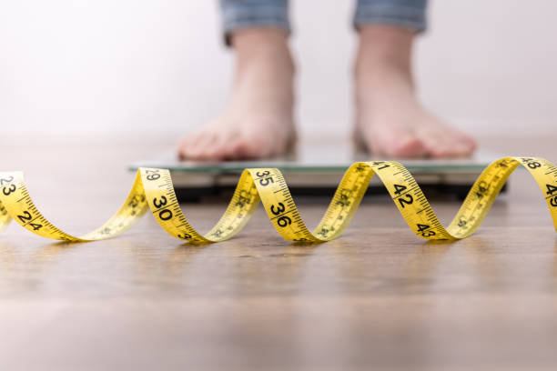

Добро пожаловать в NutriTrack!
NutriTrack – ваш надежный помощник на пути к здоровому и активному образу жизни! Мы создали этот ресурс специально для тех, кто стремится к улучшению своего питания, эффективному управлению весом и достижению поставленных целей.
Что предлагает NutriTrack?
В NutriTrack вы сможете легко и быстро рассчитывать суточное потребление калорий, чтобы точно знать, сколько энергии вам нужно для достижения ваших целей – будь то похудение, поддержание текущего веса или набор мышечной массы.
Забудьте о бумажных записках и сложных таблицах! С нашим онлайн-дневником питания вы сможете записывать каждый прием пищи, включая информацию о калориях, макро- и микроэлементах. Это поможет вам лучше понимать свои пищевые привычки и вносить необходимые коррективы.

Регулярное отслеживание вашего прогресса – ключ к успеху. В NutriTrack вы найдете удобные графики и отчеты, которые наглядно покажут, как меняется ваш вес, объемы тела и общее состояние здоровья с течением времени. Мотивация будет всегда на высоком уровне!